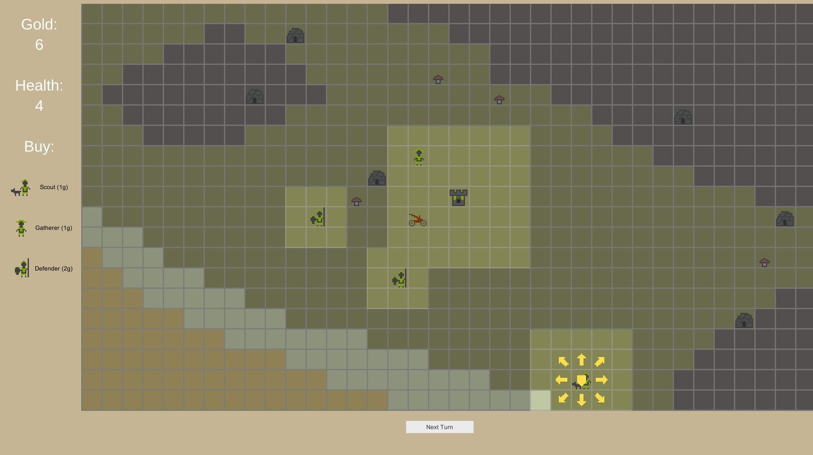

This is a page about games that I've made.
| The Defender | Feb 2019 | Play Online Jam submission page |
 | |
| #Jam #JamDNA #Prototype #Unity | ||||
| A quick 24 hour game prototype for Weekly JamDNA #3. It was supposed to be made in 96 hours, but I got in a bit late. Lots of funky code, not polished mechanics, no win screen :) | ||||
| Firefly 5 | Image | |||
| Breakout | ||||
| Asteroids | ||||
| Hither Thither Shower | ||||
| Porsche Ring | ||||
| Tic Tac Toe | ||||
| Untitled | ||||